Approval
각종 업무에서 발생하는 결재 관련 기능을 처리할 수 있습니다.
문서의 기안을 작성, 상신 및 결재 처리를 진행할 수 있습니다. 또한 지난 결재 내역을 확인할 수 있으며, 지난 결재 내역을 재 공지할 수 있습니다.
결재 및 결재 이력 관리
Approval Service를 통한 결재 및 결재 이력 관리 방법을 설명합니다.
1. 일반 품의서 작성
Approval - Report List
비용 청구를 위한 품의서 작성, 휴가 신청 등 결재가 필요한 업무를 위해 새로운 문서를 작성하는 방법을 설명합니다.
-
결재를 위한 새 문서를 작성하기 위해 [Create Approval] 버튼을 클릭합니다.
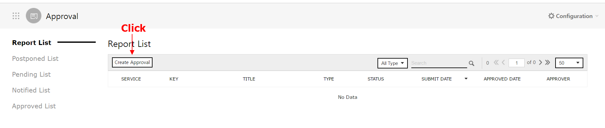
-
'Type'을 선택하는 드롭다운 메뉴에서 'General'을 선택합니다.(기본값이 General로 설정되어 있습니다.)

구분 설명 General 일반 업무를 위한 결재 문서를 의미합니다. Work Release 계획에 대한 승인서를 의미합니다. -
결재에 필요한 정보를 입력합니다.
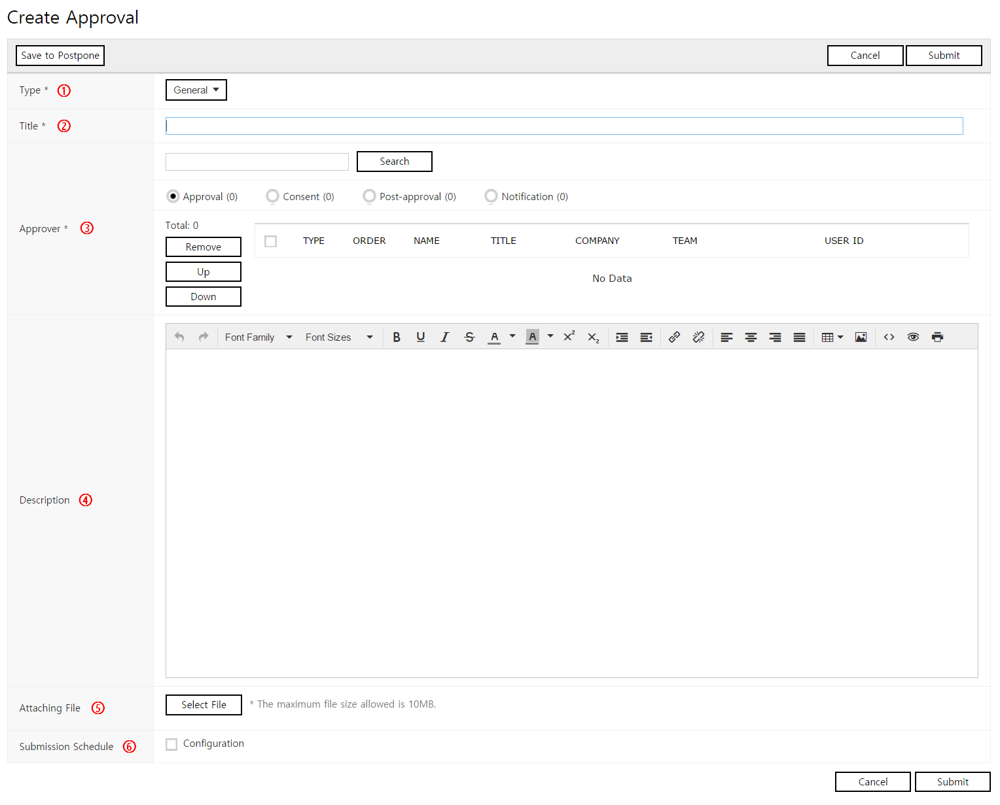
No Name Required Description ① Type Required 문서의 종류를 설정할 수 있습니다.
General과 Work 중 선택 가능합니다.② Title Required 문서의 제목을 입력합니다. ③ Approver Required 결재 라인을 설정할 수 있습니다. ④ Description . 결재를 위한 문서를 작성할 수 있습니다. ⑤ Attaching File . 첨부할 파일을 선택할 수 있습니다.
[Attaching File] 버튼 클릭 시 파일 탐색기가 팝업으로 표시되며, 첨부할 파일을 선택할 수 있습니다.⑥ Submission Schedule . 예약 상신일을 설정할 수 있습니다.
[Configuration] 체크 박스를 선택 해 년/월/일/시/분을 설정할 수 있습니다. -
[Submit] 버튼을 클릭해 문서를 등록합니다. 문서가 등록되면 결재 라인 상의 사용자들에게 새 결재 문서가 작성되었음을 알리는 이메일이 발송됩니다.
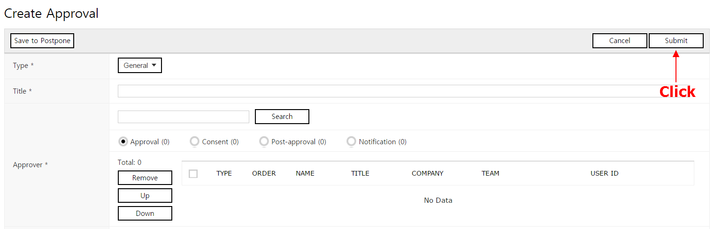
1.1 결재 라인 설정
승인자, 합의자, 사후 승인자, 참조자를 선택해 결재 라인을 설정할 수 있습니다.
-
'Approver'의 [Search] 버튼을 클릭합니다.
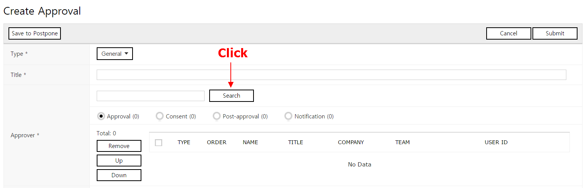
-
"Search Approver" 팝업의 'Member'에서 결재 라인에 포함시킬 사용자를 선택 후, [Selected Add] 버튼을 클릭합니다. 결재 라인에 추가된 사용자의 목록이 'Selected Member List'에 표시됩니다.
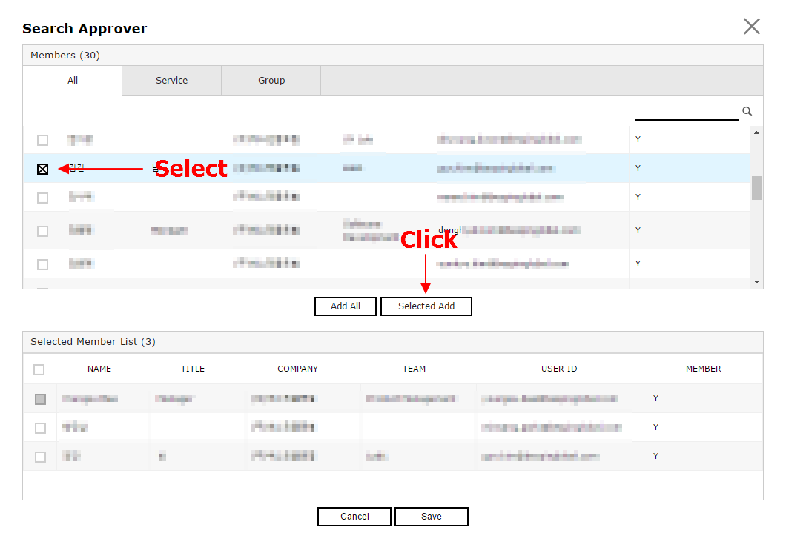
-
[Save] 버튼을 클릭합니다.
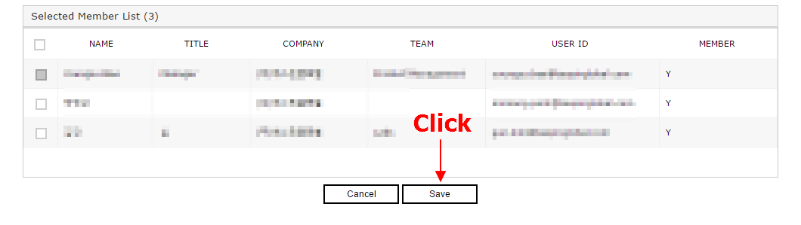
-
추가한 사용자의 역할을 설정합니다. 추가된 사용자를 선택 후 Approval, Consent, Post-Approval, Notification 중 하나를 선택해 사용자의 역할을 설정합니다.
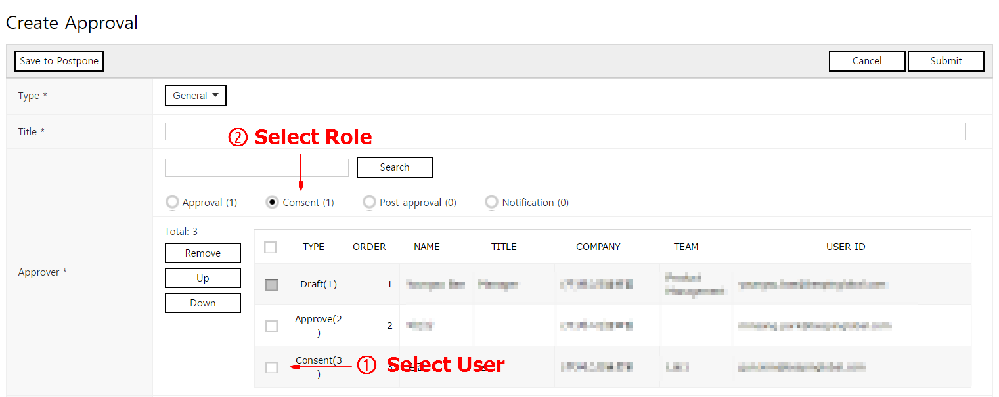
역할 설명 Approval 결재 문서에 대한 승인자를 의미합니다.
승인자의 승인이 있어야만 다음 결재가 진행됩니다.Consent 결재 문서에 대한 합의자를 의미합니다.
합의자의 승인이 있어야만 다음 결재가 진행됩니다.Post-Approval 결재 문서에 대한 사후 승인자를 의미합니다.
사후 승인자의 승인이 없어도 다음 결재가 진행됩니다.
사후 승인자는 해당 문서를 승인할 수는 있으나, 반려할 수는 없습니다.Notification 결재 문서에 대한 참조자를 의미합니다.
참조자는 승인/반려 권한은 없으며, 문서의 열람만 가능합니다. -
목록에 추가한 사용자들의 순서를 변경해 결재 순서를 지정합니다. 사용자 선택 후 [Up], [Down] 버튼을 클릭해 순서를 변경할 수 있습니다.
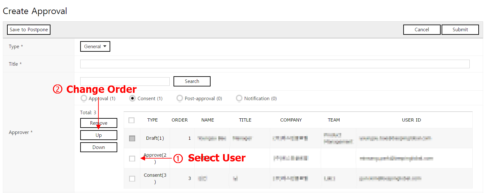
2. 결재 처리
도착한 결재 문서의 확인 방법과, 승인/반려 절차를 설명합니다.
2.1 내가 작성한 문서
Approval - Report List
-
"Report List" 메뉴를 클릭해 작성한 문서를 확인합니다. Report List 메뉴에는 로그인한 사용자가 작성하고, 결재가 진행 중인 문서의 목록이 표시됩니다.
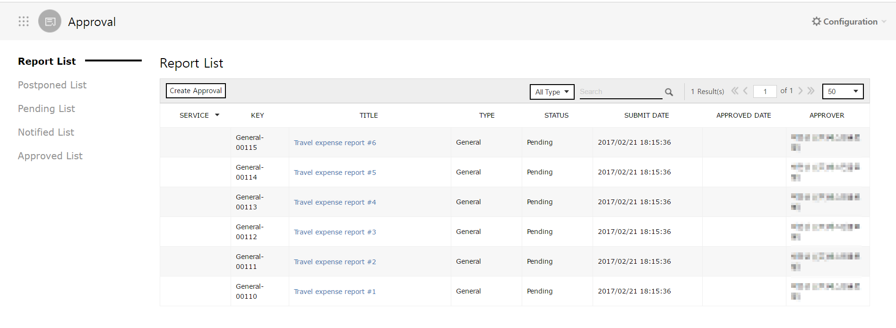
-
Report List 목록에서 문서를 클릭해 문서의 상세 내용을 확인할 수 있습니다. 문서의 결재 상황을 확인할 수 있습니다.
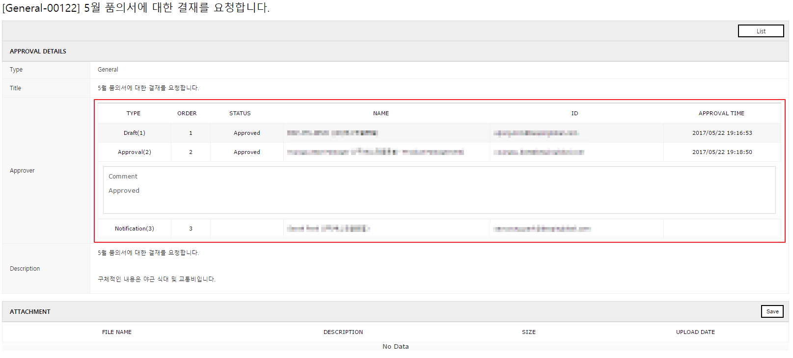
2.2 내가 승인자, 합의자인 문서
Approval - Pending List
-
"Pending List" 메뉴를 클릭해 도착한 문서를 확인합니다. Pending List 메뉴에는 로그인한 사용자가 결재해야할 문서의 목록이 표시됩니다.
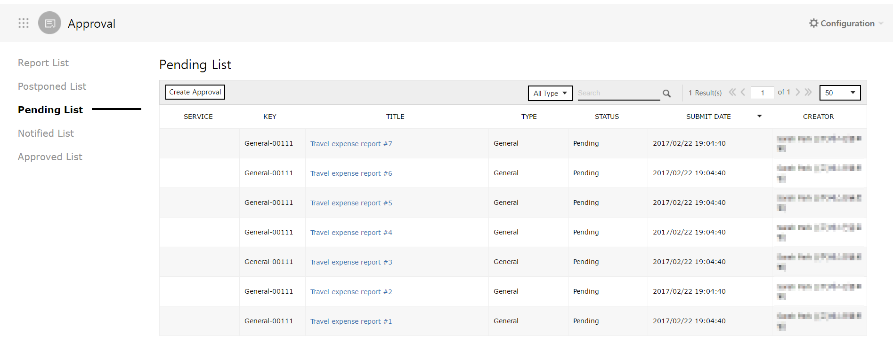
-
결재해야할 문서를 클릭해 상세 내역을 확인합니다.
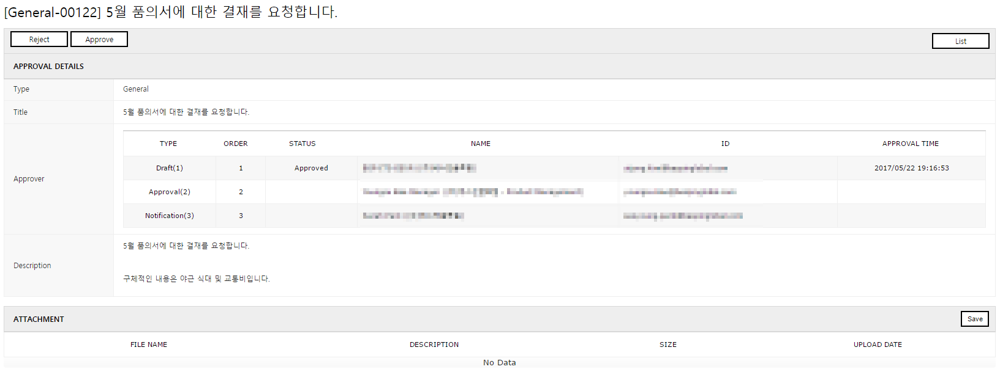
-
[Reject] 혹은 [Approval] 버튼을 클릭해 해당 문서를 승인 혹은 반려시킬 수 있습니다.
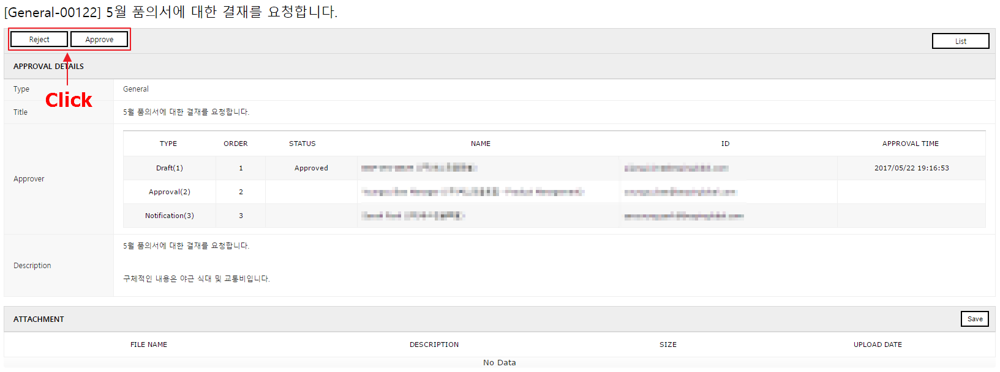
-
[Reject] 혹은 [Approval] 버튼을 클릭 시 "Approval", "Reject" 팝업이 표시되며, 승인/반려 사유를 입력할 수 있습니다. 승인/반려 사유를 입력하고 [OK] 버튼을 클릭하면 결재가 완료됩니다.

-
모든 승인자의 승인이 완료되었거나, 반려된 문서는 "Approved List"에 표시됩니다. Approved List에서 선택한 문서를 클릭해 문서의 승인 이력을 확인할 수 있습니다.
2.3 내가 참조자인 문서
Approval - Notified List
로그인한 사용자가 참조자인 문서는 해당 문서의 결재가 완료되었을 때 "Notified List"에 문서가 표시됩니다.
"Notified List"를 클릭해 로그인한 사용자가 참조자에 포함되어 있고, 결재가 완료된 문서를 확인할 수 있습니다.
3. 결재 이력 검색
Approval
문서의 결재 상태에 따라 각 메뉴에서 문서를 검색할 수 있습니다.
- - Report List: 로그인한 사용자가 작성한 문서
- - Postponed List: 로그인한 사용자가 작성 중 저장한 문서
- - Pending List: 로그인한 사용자가 승인자 또는 합의자이며, 결재를 대기 중인 문서
- - Notified List: 로그인한 사용자가 참조자이며, 결재가 완료된 문서
- - Approved List: 로그인한 사용자가 승인, 반려, 합의한 문서
문서의 검색 방법은 모든 메뉴에서 동일하게 사용할 수 있습니다.
-
검색할 문서의 "Type"을 선택합니다.
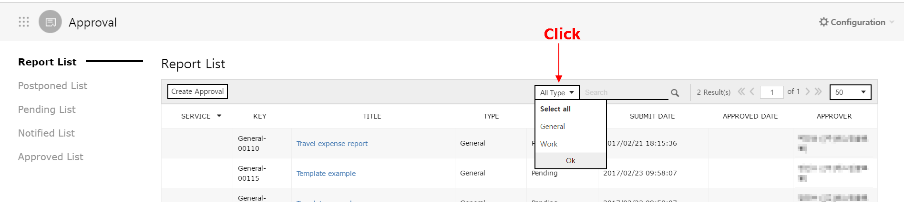
-
검색할 키워드를 입력합니다.
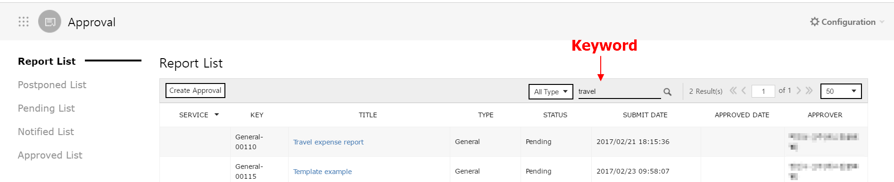
-
선택한 Type, 입력한 키워드와 일치하는 결과를 가진 문서가 목록에 표시됩니다. 입력한 키워드와 일치하는 텍스트를 하이라이팅해 표시합니다.